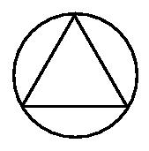

Question:
What you see is an equilateral triangle and a circle such that the circle passes through the three apexes of the triangle. Let the each side of the equilateral triangle be of leng th x. What is the probability that a random chord for this circle will be have a length > x? You must explain your answer.
Note: A chord is a line whose endpoints lie on the circumference of the c ircle.
Answer:
The answer depends on the way you assume the chord is drawn (i.e., the distribution of the random chord). Hence there could be several possible solutions. Here are a few possibilities.If you assume that a "random" chord means picking two random points along the circumference of the circle, then the probability is 1/3. This is because you can rotate the equilateral triangle until the apex lines up with the first point. Now if the second point lies on the circle between the other two apices, then the chord will be longer than x. Since the length of this region of the circle is 1/3 the entire circumference of the circle, the probability is 1/3.
If you assume that the chord is drawn by randomly picking a point within the area of the circle, and then treating this as the midpoint of the chord (a very common construction), then the probability is 1/4. This is because the midpoint must be within half the radius from the center. The probability is then, area of smaller circle / area of circle = 1/4.
Here is another possible solution from Patrick Ryan
Let us assume that there is an equal proportion of chords oriented in all directions.Then take one direction and determine what percentage of chords in that direction satisfy the condition L > x; this will be generally true for all directions.
Rotate the triangle 180 degrees and measure the area bounded by any two opposing faces and their conjoining arcs.
Those chords (in the direction of the two parallel triangle faces) that have L > x are those which fall inside this area. Those outside this area have L < x.
Numerical solution (hey, I'm an engineer, not a mathematician) gives total area of the circle A1=1.0472x. The area of the composite region described above is A2=0.6377x. As a percentage, this solution area is approximately 61% of the total circle area.
61% of all chords satisfy the condition L > x.